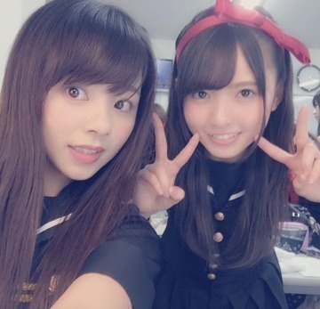
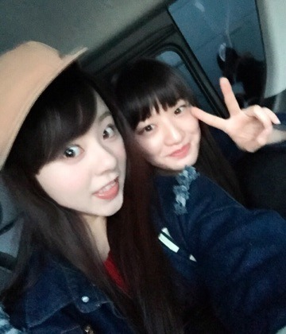
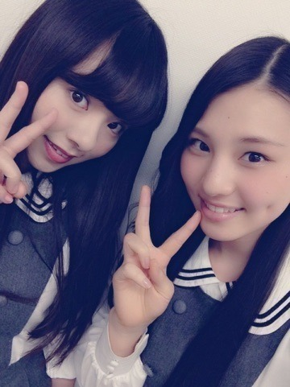

こんばんは～
今日も1日お疲れ様です*\(^o^)/*
まに。とあすか。LIVE後で髪少しボサボサやぁ。

もぉ1枚．後ろのらりん。笑
この間の『氣志團&乃木坂46、受験サプリpresentsおどる！うたう！大卒業式！」の時の写真です！
その日は氣志團さんと乃木團のコラボをさせて頂きました。
ぃゃ～... 本当に嬉しかったです。
気志團さんが弾いているリハの時、がん見していました。わら
感動しました。
翌日、朝の番組「ZIP！」や「めざましテレビ」や「スッキリ！」「Oha!4」｢はやチャン！｣...等で
その時の映像が流れていて、驚きました。本当に嬉しかったです。
感謝感謝。
まいまいのblogから引用.
花奈と.＊

あっ！ 私といおりのPV見たかなぁ？
どのペアPVともかぶってなくて，2人してガチで走り周っているので，面白いと思いますけけ

今日も1日お疲れ様でした....＊
まに？ろってぃ−？より。